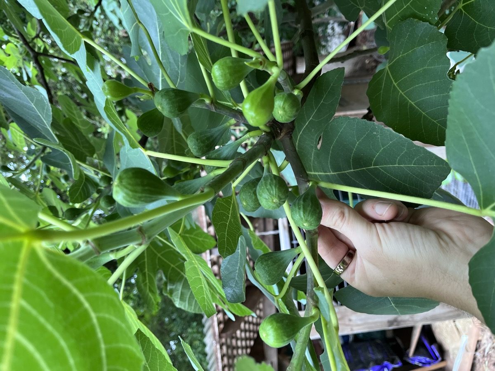
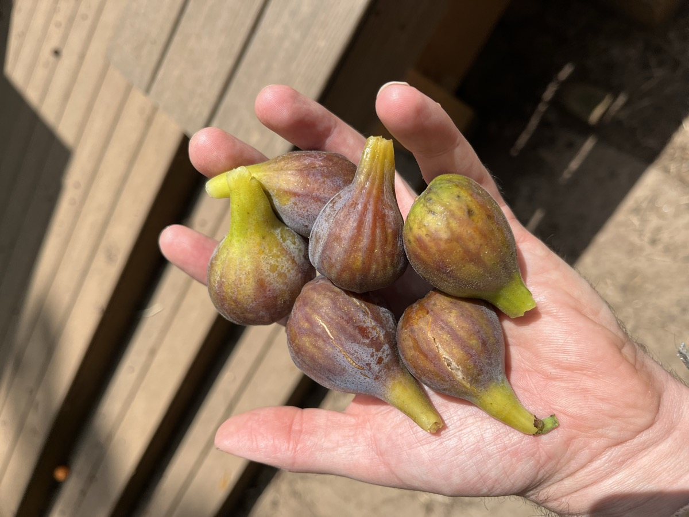
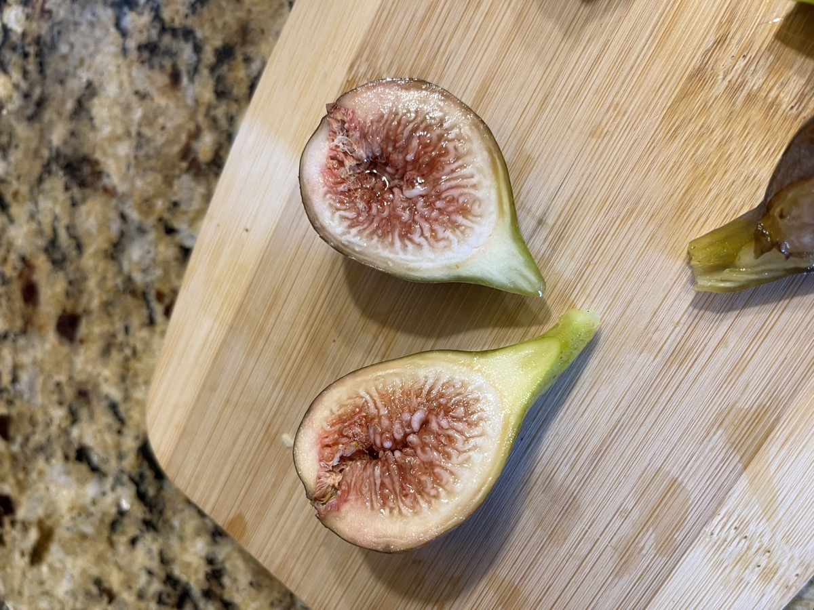
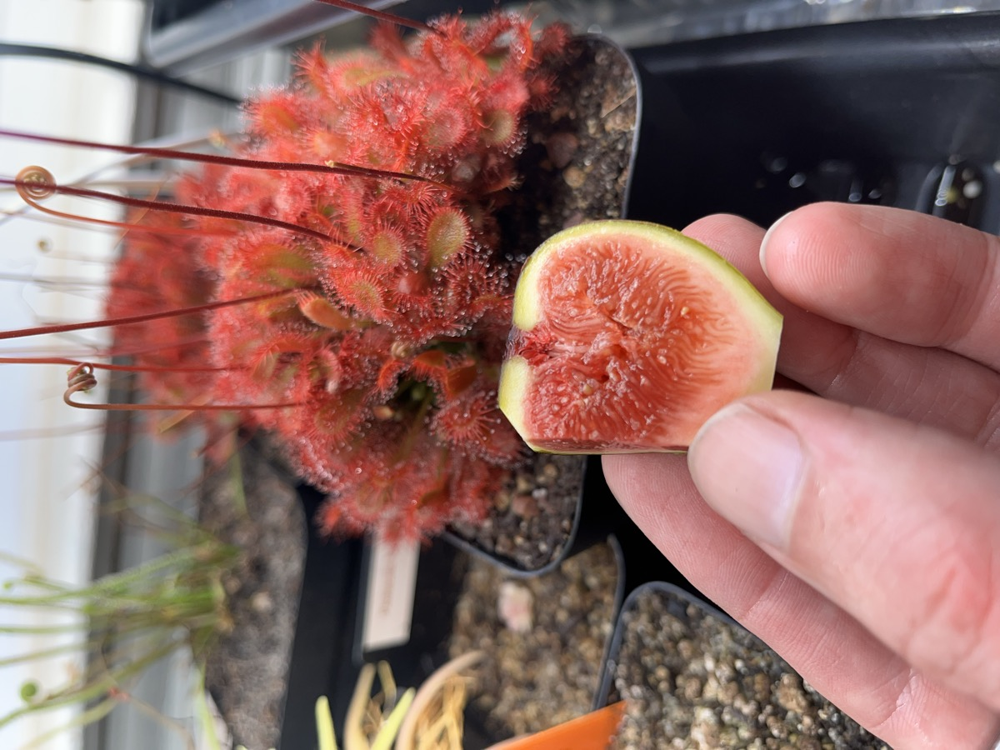

Ficus carica ‘Celeste’
Free food for life
Thanks for taking one of these home! What you've got is a small rooted fig tree in a 3.5″ deep nursery pot. Doesn't look like much yet. But figs grow fast, and if you get it in the ground somewhere sunny and keep water on it through this first summer, in a few years you'll have a tree giving you two crops of fruit a year for basically the rest of your life. Honestly, it's the easiest fruit tree I know of for this climate (and I've tried a lot of them).
Everything you need is below, but the short version: full sun, in the ground, water it the first year, then mostly leave it alone.
The mother plant your cutting came from



This is the one decision that really matters, and it's hard to undo. Worth taking a minute on it.
Find the sunniest spot you have. Four hours of direct, unobstructed sun a day is the floor, and below that you'll get a healthy-looking plant that never really produces much fruit. Six to eight hours is where these start to perform, south- or west-facing is ideal. I'd actually watch the spot over the course of a day before you commit. How much sun a place actually gets is almost always different from what you'd guess.
Picture a tree 15′ tall and 10′ wide, because that's what this is going to be. Give it at least 8–10′ of clearance from your house, your neighbor's fence, a driveway, or another tree. Fig roots are shallow and run wide rather than deep, so don't plant one tight against a foundation, a septic field, or a walkway you care about.
Figs aren't fussy about soil. Ordinary Georgia clay is fine, they do well in it. What they don't want is ground that stays soggy, so avoid low spots where water pools after a storm. If the spot drains, you're good.
A trick worth knowing: planting near a south- or west-facing wall gives you a nice warm microclimate. The wall soaks up heat during the day and releases it at night, which nudges the fruit to ripen a bit earlier and gives the tree some extra protection in a hard winter.
The whole job takes about ten minutes.
Planting now, in the heat? Go for it. Figs are tough and these will establish fine in midsummer. It is the trickiest window of the year in Atlanta though, and the whole thing comes down to water. A 3.5″ root ball can dry out in a single hot afternoon, so check it daily and water it regularly until it's established (details just below). Stay on top of that for the first few weeks and it'll take right off.
If it's easier for you, potting it up into a 1- or 2-gallon container and planting in the ground come October works great too. But there's no need to wait.
Almost all the work with a fig tree happens in the first year. After that it pretty much takes care of itself.
How often you water changes as the plant gets established, and the first few weeks are the ones that matter. The finger test is the only tool you need: push a finger into the soil right next to the stem, and if the top inch is dry, water it.
The first two to four weeks. Right now the root ball is still only the size of the pot it came in, and it can dry out in a single hot afternoon. Check it every day and water whenever the top inch is dry. Planted in July or August that usually works out to every day or every other day. This is the stretch where these plants get lost, and it's almost always to drought.
The rest of the first season. Once the plant is clearly pushing new leaves, its roots are moving out into the surrounding soil and you can ease off to a deep soak about twice a week (more in a hot dry spell). Deep and less frequent beats a light daily sprinkle. You want the water going down and the roots following it.
Second year onward. An established fig is about as drought-tolerant as fruit trees get. You'll water it in a bad drought and otherwise ignore it. One thing worth knowing though: fig fruit likes steady moisture while it's sizing up, so a tree that swings between bone dry and soaked is more likely to drop its figs or split them.
Helpful but not necessary. A fig in the ground will grow and fruit fine on its own, so if you never feed it you haven't done anything wrong. A bit does speed things along though. A light application of balanced fertilizer in spring, or some compost spread around the base, gives the tree a push while it's sizing up over the first few years.
Use a light hand and you'll get the benefit without any downside. The one thing to avoid is piling on nitrogen, which buys you gorgeous leafy growth at the expense of fruit.
Established Celeste figs shrug off Atlanta winters no problem, but a first-year plant is smaller and more exposed than one with a few seasons of roots behind it. Before the first hard freeze just pile mulch a few inches deep over the root zone. That's all it needs.
If an unusually hard winter ever kills the top growth back, don't pull the plant. Figs resprout vigorously from the roots in spring. You'd lose that year's early crop, but the main crop comes on new wood and shows up anyway.
We get two harvests a year here, which is one of the really nice things about growing figs in Atlanta. Our season is long enough to finish both.
Forms on last year's wood and ripens around June. On Celeste it's the lighter of the two, more of a handful than a haul. But it's the first fresh fig of the year and that counts for something.
Forms on the current season's new growth and ripens from roughly August into fall. This is the big one, what Celeste is known for. Comes on over several weeks so you pick a bit at a time.
Don't expect much fruit the first year or two, the plant is busy building roots and wood. You'll usually see your first real crop in year two or three, and from there it climbs pretty steeply as the tree fills out.
This is the part people get wrong, and it's worth getting right because a fig does not ripen after you pick it. If you pick it early that's as good as it will ever taste.
A ripe fig tells you pretty clearly though. The neck softens and the fruit droops down instead of pointing out. It goes soft to a gentle squeeze, the skin deepens in color, and often a bead of nectar forms at the eye on the bottom or the skin shows small surface splits. When it's ready it comes off with barely any pull. If you have to tug, give it another day or two.

Why Celeste does well in our humidity: Celeste has a tight, closed eye (the small opening at the bottom of the fruit is nearly sealed). That keeps rain and dried-fruit beetles out, so the fruit resists the splitting and souring that ruin open-eyed varieties in the muggy Southeast. It's a big part of why this one became the Southern standard.
It's also a common-type fig, which means it sets fruit entirely on its own. No pollination, no second tree, no fig wasp.
Figs don't need much. If you want to prune for shape or to keep it reachable, do it in late winter while the tree is dormant, and take out dead wood, crossing branches, and any suckers coming up from the base that you don't want. Go easy though: the early summer crop forms on last year's wood, so heavy winter pruning trades away that crop for a bushier tree. Lots of people don't prune at all and do just fine.
There is very little to worry about here. You won't be spraying anything. Your actual competition is birds and squirrels, who are excellent judges of fig ripeness and will get to the fruit the same day you would. Bird netting works if you want it, but most of us just pay the tithe. A mature tree makes way more figs than one household can eat anyway.
Fig cuttings root super easily. Take pencil-thick cuttings of dormant wood in late winter and you can turn one tree into a dozen without much skill or equipment. That's exactly where the plant you're holding came from. Pass some along when yours is big enough!
One safety note: the milky white sap in fig leaves and unripe fruit is an irritant. On some people it causes a rash, and combined with sunlight it can cause a more serious burn-like reaction (phytophotodermatitis, if you want the fancy term). Not dangerous to have around, but worth knowing about, especially if you have kids. Wear gloves and long sleeves if you're doing a lot of pruning, and rinse off any sap that gets on skin rather than letting it sit there in the sun. Ripe fruit is completely fine.